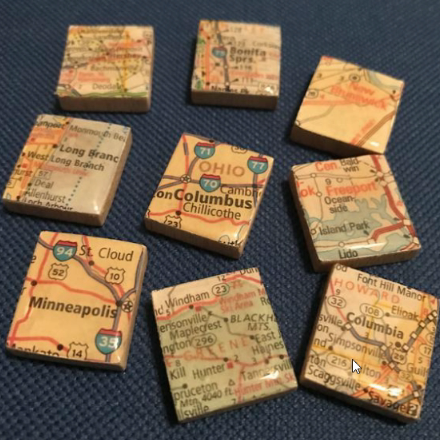
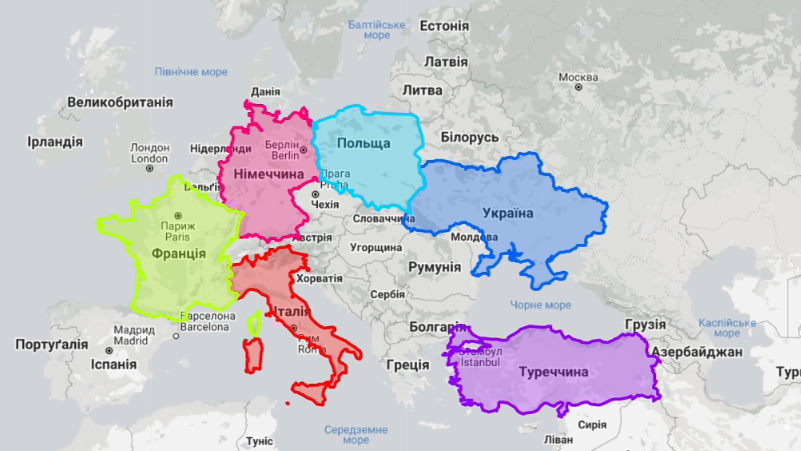

Web maps essentials
Борис Могила
<EPAM>
Презинтація
Приклади

План
- З чого складаються карти
- Тайли і їх типи
- GeoJson
- Варіанти виведення даних
- Можливості векторних карт
- Корисні посилання
З чого складаються карти


Тайли і їх типи
Растрові тайли

Переваги
- Мінімальне навантаження на процесор користувача
- Простота розробки софту для відображення
Недоліки
- Дуже великий обсяг
- Неможливість динамічної зміни стилів
Векторні тайли

Переваги
- Набагато менший об'єм даних
- Динамічна зміна відображення елементів
Недоліки
- Ресурсомісткість і тривалість відтворення
GeoJson
Типи даних
- Point
- LineString
- Polygon
- MultiPoint
- MultiLineString
- MultiPolygon
- Feature
- FeatureCollection
{ "type": "Point", "coordinates": [30, 10] }{ "type": "LineString", "coordinates": [ [30, 10], [10, 30], [40, 40] ] }{ "type": "Polygon", "coordinates": [ [[30, 10], [40, 40], [20, 40], [10, 20], [30, 10]] ] }
{ "type": "MultiPoint", "coordinates": [ [10, 40], [40, 30], [20, 20], [30, 10] ] }{ "type": "MultiLineString", "coordinates": [ [[10, 10], [20, 20], [10, 40]], [[40, 40], [30, 30], [40, 20], [30, 10]] ] }
{ "type": "MultiPolygon",
"coordinates": [
[
[[40, 40], [20, 45], [45, 30], [40, 40]]
],
[
[[20, 35], [10, 30], [10, 10], [30, 5]
[[30, 20], [20, 15], [20, 25]]
]
]
}
{
"type": "FeatureCollection",
"features": [
{ "type": "Feature",
"geometry": {...},
"properties": {"prop0": "value0"}
},
]
}
Варіанти виведення даних
70000 елементів на карті


Недоліки
- Всі дані тягнуться одночасно
- Блокування основного потоку (leaflet)
- Дуже довго
70000 елементів на карті з кластерізацією


Недоліки
- Всі дані тягнуться одночасно
- На mapbox все ще довго
Сервена кластеризація

Недоліки
- Немає доступу до всіх даних об'єкту
70000 елементів на карті за допомогою тайлів


Недоліки
- На leaflet незначні затупи
- Відсутня кластерізація
Можливості векторних карт


Цікаві рішення
Створення тайсетів
Кластеризація
Створення власних стилів для карти
Geocoding
Генерація власних векторних тайлів
Робота з геоданими
Контактні дані

facebook: BorysMohyla
twitter: BoryaMogila
email: bora.mog@gmail.com
Дякую за увагу